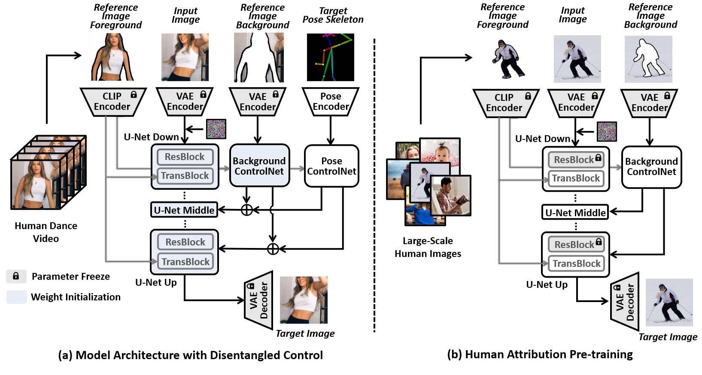

(a) Model Architecture with Disentangled Control: We propose an organic integration of conditions with cross-attention and ControlNet. Specifically, we substitute the text condition in T2I diffusion model with the CLIP image embeddings of the human subject, which is incorporated via the cross-attention modules of U-Net; while the background and human pose conditions are fed into two separate ControlNet branches. By disentangling the control from all three conditions, DisCo can not only achieve fidelity in human foregrounds and backgrounds but also enable arbitrary compositionality of human subjects, backgrounds, and dance-moves.
(b) Human Attribute Pre-training: We design a proxy task in which the model conditions on the separate foreground and background areas and must reconstruct the complete image. In this way, the model learns to better encode-and-decode the complicated human faces and clothes during pre-training, and leaves the pose control learning to the fine-tuning stage of human dance synthesis. Crucially, without the constraint of pairwise human images for pose control, we can leverage large-scale collections of human images to learn diverse human attributes, in turn, greatly improve the generalizability of DISCO to unseen humans.